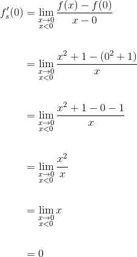
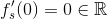
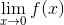

Derivate laterale
Fie  un interval de numere reale,
un interval de numere reale,  și funcția
și funcția  .
.
Definitia FD5: Derivata la stânga și derivata la dreapta
- Dacă punctul este punct de acumulare pentru , funcția
 are derivată la stânga în
are derivată la stânga în  dacă există . Atunci se numește derivata la stânga a funcției în punctul .
dacă există . Atunci se numește derivata la stânga a funcției în punctul . - Dacă punctul este punct de acumulare pentru , funcția are derivată la dreapta în dacă există x_0}}\frac{f(x)-f(x_0)}{x-x_0}\in \overline{\mathbb{R}}">. Atunci x_0}}\frac{f(x)-f(x_0)}{x-x_0}"> se numește derivata la dreapta a funcției în punctul .
Observație:
Dacă , atunci este derivabilă la stânga în , iar dacă , spunem că este derivabilă la dreapta în .
Teorema FD6: Legătura dintre derivata unei funcții într-un punct și derivatele laterale în acel punct
Funcția are derivată în dacă și numai dacă are derivate laterale în astfel încât . Atunci derivata funcției în punctul este:
.
Dacă , și , atunci funcția este derivabilă în punctul și avem următoarea egalitate:
.
(O funcția este derivabilă într-un punct dacă este derivabilă la stânga și la dreapta în acel punct, adică derivatele sale laterale în punctul considerat au valori reale.)
Observație:
Dacă funcția are derivatele laterale egale în punctul , vom spune că funcția este derivabilă bilateral. Așadar, conceptele de derivabilitate și derivabilitate bilaterală coincid.
Exemple:
- Să se verifice dacă funcția
 , este derivabilă în punctul
, este derivabilă în punctul  .
.
Rezolvare:
Reamintim faptul că  .
.
Calculăm derivata la stânga în punctul .
.
Calculăm derivata la dreapta în punctul .
0}}\frac{f(x)-f(0)}{x-0}\\\\ &=\lim_{\substack{x\to 0 \\ x> 0}}\frac{|x|-|0|}{x}\\\\ &=\lim_{\substack{x\to 0 \\ x> 0}}\frac{|x|-0}{x}\\\\ &=\lim_{\substack{x\to 0 \\ x> 0}}\frac{|x|}{x}\\\\ &=\lim_{\substack{x\to 0 \\ x> 0}}\frac{x}{x}\\\\ &=\lim_{\substack{x\to 0 \\ x> 0}}1\\\\ &=1 \end{align*}">
 .
.
Așadar, limitele laterale ale funcției în punctul sunt și .
Se observă că .
Rezultă că funcția modul nu este derivabilă în .
Graficul funcției modul este:

- Să se studieze derivabilitatea funcției , 1 \end{cases}"> în punctul
 .
.
Rezolvare:
Calculăm derivata la stânga în punctul .
 .
.
Calculăm derivata la dreapta în punctul .
1}}\frac{f(x)-f(1)}{x-1}\\\\ &=\lim_{\substack{x\to 1 \\ x> 1}}\frac{2x-1-(2\cdot 1-1)}{x-1}\\\\ &=\lim_{\substack{x\to 1 \\ x> 1}}\frac{2x-1-2+1}{x-1}\\\\ &=\lim_{\substack{x\to 1 \\ x> 1}}\frac{2x-2}{x-1}\\\\ &=\lim_{\substack{x\to 1 \\ x> 1}}\frac{2(x-1)}{x-1}\\\\ &=\lim_{\substack{x\to 1 \\ x> 1}}2\\\\ &=2 \end{align*}">
 .
.
Avem că și . Se observă că .
Deci funcția este derivabilă în punctul , deoarece are derivatele laterale în acest punct egale.
Aplicații ale derivatelor laterale
Fie un interval de numere reale, și funcția .
Interpretarea geometrică a derivatelor laterale
În cazul în care (derivata la stânga a funcției în punctul ) și (derivata la dreapta a funcției în punctul ), atunci aceste numere reprezintă pantele semitangentelor la graficul funcției date în .
În funcție de valorile derivatelor laterale ale funcției în punctul , distingem următoarele situații:
Definiția FD7: Punct de întoarcere, punct unghiular, punct de inflexiune
- Punctul este punct de întoarcere pentru graficul funcției dacă funcția este continuă în și , sunt infinite și diferite. (Adică dacă , atunci , iar dacă , avem că .)
- Punctul se numește punct unghiular la graficul funcției dacă funcția dată este continuă în și , sunt diferite și cel puțin una este finită. (Adică putem avea cazurile: , sau , sau , .)
- Spunem că punctul este punct de inflexiune pentru graficul funcției dacă funcția este continuă în , are derivată în punctul (finită sau infinită), iar funcția este convexă (concavă) de o parte a lui și concavă (convexă) de cealaltă parte a punctului .
Observație:
Noțiunile introduse în Definiția FD7, adică punctul de intoarcere, punctul unghiular și punctul de inflexiune, poartă numele de puncte de nederivabilitate.
Exemple:
- Fie funcția , . Să se arate că punctul este punct de întoarcere pentru graficul funcției .
Rezolvare:
Studiem continuitatea funcției în punctul , calculând limitele laterale în acest punct.
.
0}}f(x)&= \lim_{\substack{x\to 0 \\ x> 0}}\sqrt{x}\\\\ &=\sqrt{0}\\\\ &=0 \end{align*}">
0}}f(x)=0 \end{align*}">.
Calculăm valoarea funcției în .
.
Înseamnă că este continuă în . (A se citi definiția unei funcții continue în ghidul Funcții continue.)
Calculăm derivatele laterale ale funcției în punctul .
.
0}}\frac{f(x)-f(0)}{x-0}\\\\ &=\lim_{\substack{x\to 0 \\ x> 0}}\frac{\sqrt{x}-0}{x}\\\\ &=\lim_{\substack{x\to 0 \\ x> 0}}\frac{\sqrt{x}}{x}\\\\ &=\lim_{\substack{x\to 0 \\ x> 0}}\sqrt{\frac{x}{x^2}}\\\\ &=\lim_{\substack{x\to 0 \\ x> 0}}\sqrt{\frac{1}{x}}\\\\ &=\frac{1}{0}\\\\ &=+\infty \end{align*}">
.
Avem că și .
Conform Definiției FD7 a., punctul este un punct de întoarcere pentru graficul funcției date, asa cum este sugerat și în graficul de mai jos.

- Fie funcția , 0 \end{cases}">. Să se determine natura punctului pentru graficul funcției .
Rezolvare:
Funcția este continuă. (Verifică continuitatea funcției, folosind informațiile din ghidul Funcții continue.)
Calculăm limitele laterale ale funcției în punctul .

.
0}}\frac{f(x)-f(0)}{x-0}\\\\ &=\lim_{\substack{x\to 0 \\ x> 0}}\frac{\mathrm{e}^x-\mathrm{e}^0}{x}\\\\ &=\lim_{\substack{x\to 0 \\ x> 0}}\frac{\mathrm{e}^x-1}{x}\\\\ &=1 \end{align*}">
.
Limita de mai sus este  deoarece este o limită remarcabilă. Pentru mai multe detalii, accesează pagina Limitele funcțiilor elementare (ultima parte) a ghidului Limite de funcții.
deoarece este o limită remarcabilă. Pentru mai multe detalii, accesează pagina Limitele funcțiilor elementare (ultima parte) a ghidului Limite de funcții.
Deci , iar . (Înseamnă că limitele laterale calculate în punctul sunt diferite, iar cel puțina una din ele este finită.)
Conform Definiției FD7 b., punctul este punct unghiular pentru graficul funcției .
- Fie funcția , . Să se arate că punctul este punct de inflexiune pentru graficul funcției .
Rezolvare:
Calculăm .
.
Calculăm derivata funcției în punctul .
.
Rezultă că funcția dată este continuă și derivabilă în punctul .
Deci funcția este continuă și derivabilă pe  .
.
Acesta este graficul funcției date.

Din grafic se poate observa că este concavă pe intervalul și convexă pe intervalul .
Deci, conform Definiției FD7 c., punctul este punct de inflexiune al graficului funcției date și dreapta este tangentă la grafic.